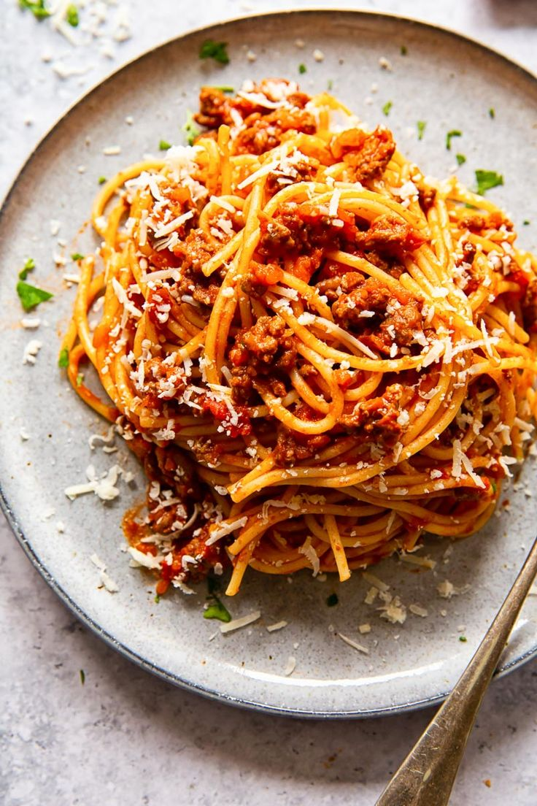

Tallarines rojos

Descripción:
El asado con tallarínes rojos o los tallarines de la Nona son un plato casero traído de Italia con la combinación perfecta: la sazón peruana.
Ingredientes:
- 1/2 botella de aceite vegetal
- 1 Ajo
- 1kg de cebolla
- 1kg de tomate
- 1kg de zanahoria
- 1 salsa roja completa
- 1 pomarola
- 3 hongos
- 4 hojas de laurel
- Vino tinto (de preferencia Malbec)
- 1kg de carne para asado
- 360g de fetuccini linguinni grosso
Preparación:
- Licuar el ajo y la cebolla (ojo: no laves la licuadora)
- Poner el aceite en una olla alta a calentar
- Vertir el ajo y cebollas luicuados en la olla
- Esperar aprox. 1 hora a que cocine (tip: cuando se mueva el contenido de la olla que se pueda ver el fondo)
- Licuar el tomate (ojo: no laves la licuadora aún)
- Cuando haya cocinado la cebolla añadir el tomate licuado a la mezcla
- Esperar 1 hora a que cocine (tip: habrá cocinado cuando no haya un sabor predominante)
- Licuar la zanahoria y añadir a la mezcla
- Después de 1 hora de cocción añadir la salsa roja completa
- A la par de la salsa roja, añadir la Pomarola
- Agregar los hongos y las hojas de laurel y dejar cocinando
- Aparte, en una sarten sellar en sal la carne para asado
- Una vez sellada, agregar a la olla
- Agregar 1 copa de vino a la olla, remover y tapar
- Esperar 1 hora de cocción
- En otra olla hervir agua
- Luego, agregar sal al agua hervida
- En el agua salada, poner los fetuccini por 6 min. aprox.
- Escurrir la pasta
- Servir y ¡a disfrutar!